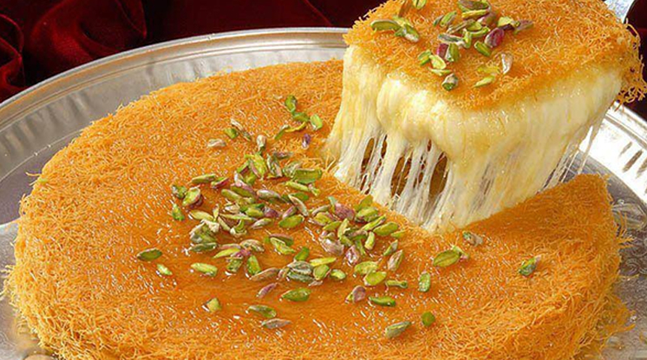

Kunefe

Ingredients
- Kadaif
- Turkish string cheese
- Unsalted butter
- Pistachio
Steps
- First prepare the sugar syrup
- Place kadafi in a food processor and chop up finely.
- Add butter and milk and line a 8 inch square heavy baking dish with half of this mixture.
- Mix the cheeses with the pistachios, sugar& nutmeg and spread onto shredded filo.
- Bake for 45 minutes.
- Make a sugar syrup by boiling water with sugar and lemon juice.
- When kunefe comes out of the oven, ladle 2/3 of the hot syrup over it and save the rest to pass while eating.
- Enjoy!